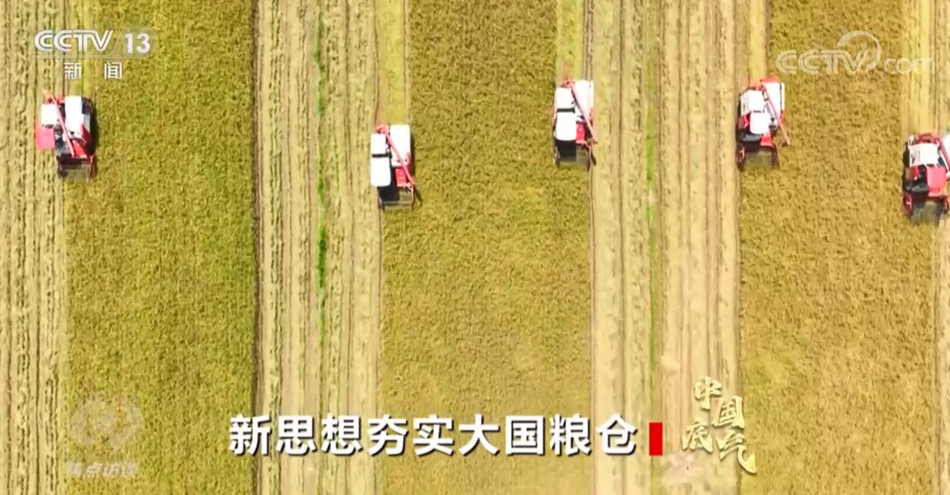

央视网消息（焦点访谈）：党的十八大以来，以习近平同志为核心的党中央始终把解决粮食安全问题作为治国理政的头等大事，重农抓粮一系列政策举措有力有效，我国粮食产量站稳1.3万亿斤台阶，实现谷物基本自给、口粮绝对安全。我们把饭碗牢牢端在自己手中，为保障经济社会发展提供了坚实支撑，为应对各种风险挑战赢得了主动。连续八年1.3万亿斤，这个沉甸甸的数据是如何取得的呢？
人勤春来早，春耕农事忙。立春之后，由南到北，我国春耕春管工作陆续展开，春天的田野处处生机盎然。

今年，我国启动了新一轮千亿斤粮食产能提升行动，这是一个新的起点。2015年以来，我国粮食产量连续8年稳定在1.3万亿斤以上，人均粮食占有量始终稳稳高于国际公认的400公斤粮食安全线。从十年前的约12200亿斤到2022年的约13700亿斤，粮食产量提高了1500亿斤。

国务院发展研究中心农村经济研究部部长叶兴庆：“我们研究粮食安全的人有一个概念，1000亿斤是一个台阶，这就是说我们用十年时间使粮食产量上了一个半台阶。这是在化肥和农药开始减量的情况下取得的，是在极端天气事件多发、频发的情况下取得的，是在从事农业生产的人口减少的条件下取得的，这在中国粮食生产发展历史中是一个了不起的成就。”
国家仓廪充实，为经济社会行稳致远夯实了根基。14亿人口要吃饭，这是中国最大的国情。党的十八大以来，习近平总书记四次出席中央农村工作会议并发表重要讲话，对“三农”工作和粮食生产、粮食安全作出一系列重要指示。2013年12月召开的中央农村工作会议上，习近平总书记把“确保我国粮食安全”放在首位。
叶兴庆：“早在2013年，习近平总书记就明确提出来要确保谷物基本自给，口粮绝对安全，要实现这样一个目标，总书记又提出新的粮食安全战略，就是那五句话20个字，‘以我为主，立足国内，确保产能，适度进口，科技支撑’。”
2012年，我国粮食生产实现了“九连增”，丰收的景象下也藏着隐忧，其中一项就是耕地。2006年，我国耕地面积减少为18.27亿亩，跟9年前比减少了1.2亿亩。18亿亩的耕地红线还要不要守？能不能守住？也成为大家争议的话题。
北京师范大学乡村振兴与发展研究中心主任张琦：“如何来保障18亿亩耕地红线？实际上面临一些很大的困难，因为我们人多地少，如何在保证粮食总产量不减的情况下又实现农民自身效益、农业的效益提升和提高。与此同时，工业化的发展、城市化的发展也同样需要土地，耕地可能会减少。所以说防止非农化、非耕化的任务也是非常艰巨的。”